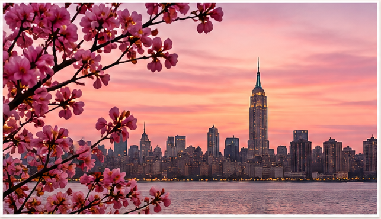

A collection of my work, ideas, and creative journey.
My name is Dilnoz Dadobaeva, and I am a Human Biology student at Hunter College. I have always been more focused on science and education, but I also wanted to explore a different side of myself. That is one of the reasons I decided to take MEDPL 15000.
I would describe myself as someone who enjoys learning new things and discovering different ways to express ideas. Before taking this class, I did not have much experience with photography, digital art, or visual design. I mostly saw pictures as a way to capture memories, but now I understand that creativity can communicate feelings, ideas, and messages.
For me, creativity means being able to look at something in a different way and use imagination to express myself. I enjoy experimenting with colors, images, and designs, even when I am still learning how to use the tools.
As a Human Biology student, I am usually involved in science-related subjects, so this class gave me an opportunity to step outside my usual academic interests. It helped me become more open-minded, patient, and confident in trying something new.
This portfolio represents not only the work I completed during the semester but also my personal experience, growth, and exploration of creativity.
MEDPL 15000 | Hunter College | Fall 2026
Created by Dilnoz Dadobaeva